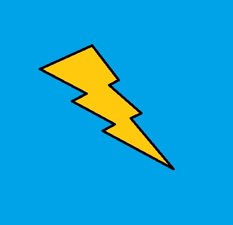

Electricity Problems.
Aboutus

- Shortage
- Problems
- Solutions
- Soures of Help
In today's time electricity is a very important need for all of us.
Electrical gadgets cannot be operated without electricity.
Electrical problems:
In our day to day life we all face electrical problems as without it,it is nearly impossible to do anything.
For example,
The television,rice cooker,electric kettle,etc. can't be used or operated without it.
Shortage:
Most places in our country face the shortage of electrity,especially in the rural areas where
these services are difficult to reach.Without the help from the government it would be a difficult
task to provide electricity to these places.
Solutions:
Some of the ways we can use to reduce the shortage of electricity are as follows:
Install solar panels and charge them during the day to produce electricity using solar energy.
Construct a power plant in the region where there is lack of electricity to generate electricity.
Make the use of water in the rivers to get hydroelectricity.
More technology would help in all the above solutions.
Helps:
We can take the help of our government to do some of the work we can't do by ourselves
For example,
TO construct a power plant,install a large bunch of solar panels.
Another way is to donate funds to be able to at least one of the ways that I have listed in
the solution category.